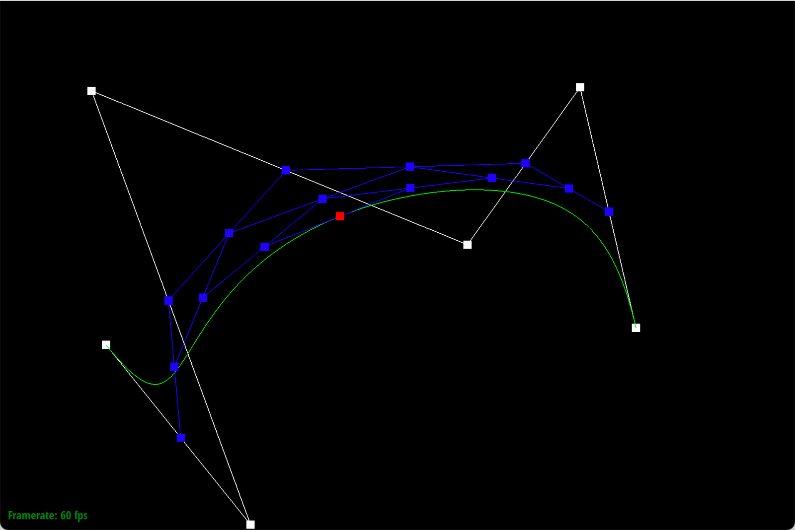
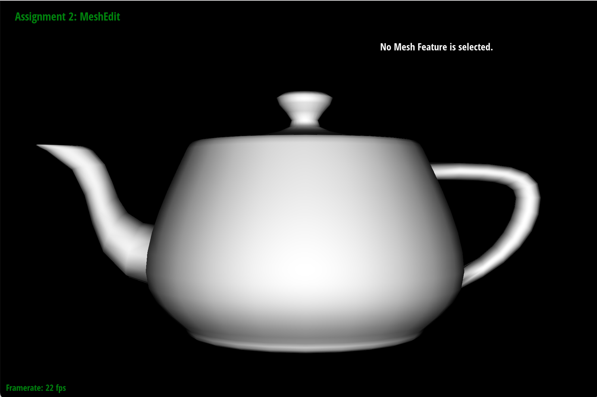
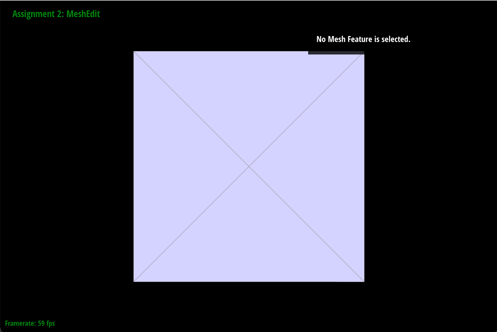
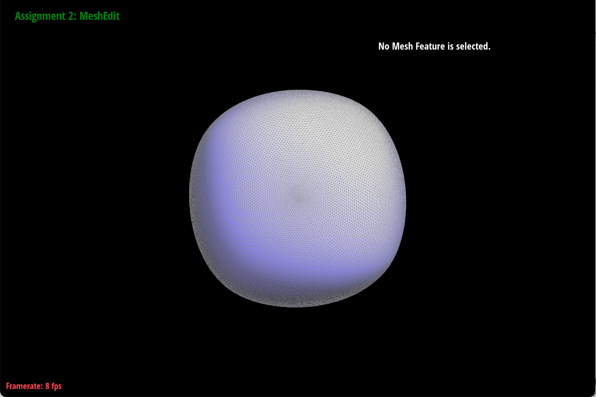
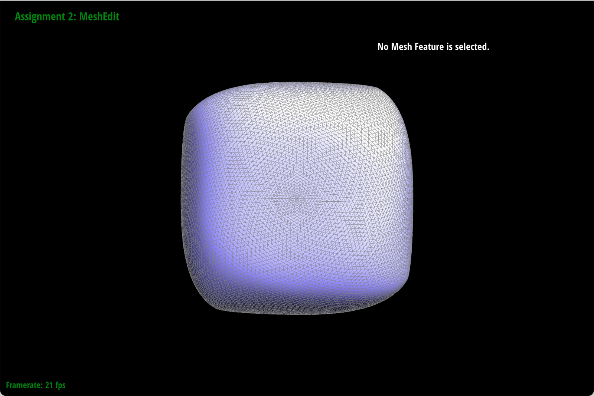

Project 2 Write-Up
Website: https://evelynwu88.github.io/cs184-proj2-website/
Overview
For this project, we implemented de Castejau’s algorithm to evaluate Bezier curves from control points. We then
extended it to evaluate Bezier Surfaces. In parts 3-6 we implemented area-weighted vertex normals, edge
flipping, edge splitting, and loop subdivision for upsampling. Overall, this project reinforced our
understanding on Bezier Curves & Surfaces and Mesh Representations & Geometry Processing.
Task 1
De Casteljau’s algorithm uses linear interpolation at each step to introduce a new point between every 2
consecutive control points and drawing edges between the every 2 new points to reduce the total number of points
by 1 at each step. It applies this process recursively until only 1 point is left—the point that our Bezier
curve lies on. In this project, we implemented evaluateStep(std::vector const &points), which takes in
an array of points performs one single step of de Casteljau’s algorithm to output an array of points with
size one less than the input. In this function, we directly return the single point if the input is of size
1. Otherwise, we calculate the linear interpolation between every 2 consecutive points in the input array
and insert it into our output array. We lastly return our output array, which is of size 1 less than the
input array.
Below are the 6 control points we chose to create our own Bezier curve.
6
0.200 0.350
0.350 0.200
0.800 0.600
0.900 0.750
1.100 0.500
1.200 0.382
Below are screenshots of each step/level of the evaluation from the original control points down to the
final evaluated point. We toggled E to step through and C to show the completed Bezier curve.
Below are screenshots of a slightly different Bezier curve resulted by moving the original control points
around and modifying the parameter t via mouse scrolling.
Did not modify t:

Modified t:
Modified t:
Task 2
De Casteljau Algorithm extends to Bezier Surfaces when we finish evaluate each row, which are 1D arrays, as
Bezier Curves, and figure out 1 control point for each row. Lastly, we linearly interpolate across the other
direction using the control points for all the rows to get the final control point of the Bezier Surface. We
implemented evaluateStep(std::vector const &points, double t), evaluate1D(std::vector const
&points, double t), and evaluate(double u, double v) for this part of the project. EvaluateStep
evaluates 1 level of Bezier Curve and a description of the implementation is attached in the previous
part. Evaluate1D fully runs de Casteljau Algorithm on a 1D array of points to evaluate a Bezier Curve.
More specifically, it runs evaluateStep size(points)-1 number of times until the there is only 1 point
left—the single point that the Bezier Curve lies on. Lastly, evaluate takes in a 2D matrix and calls
evaluate1D for each row (in the u direction), and stores the single control point for each Bezier Curve
in an array. It returns evaluate1D called on the array we just built, across the v direction, thereby
calculating the single control point for the Bezier surface.
Below is a screenshot of bez/teapot.bez evaluated by our implementation.
Task 3
We implemented the area-weighted vertex normals by using halfedges to iterate through faces incident to a
vertex. We used a do while loop that terminates once we reach our original half edge, indicating that we have
visited all neighbor faces. Within this loop, we got the 3 verticies that define a neighbor face and calculated
the area-weighted normal of this neighbor face by multiplying the cross products of edges that connect to the
vertex and the face’s norm. This value is added to an accumulated sum that stores this calculation for every
neighbor face. Lastly, we return the unit of this sum.
Below are screenshots of dae/teapot.dae comparing teapot shading with and without vertex normals. We used Q to
toggle default flat shading and Phong shading.

Task 4
We first drew out diagrams for before and after flipping, with all the edges, halfedges, vertices, and faces
labeled. Then according to the pre-flip diagram, we created variable names for each element. To make sure that
we set every pointer that has been modified, we reset every pointer for every element. We called setNeighbors()
for every halfedge and update the pointers to match the post-flip diagram. And we reset the halfedge() for each
vertex, face, and edges to make sure that they match to the correct halfedge.
Below are screenshots of a mesh before and after some edge flips.
Debugging journey:
When we select an edge to flip, nothing happens. We went through the code again and compared it with the diagram
we drew. We found that in some of the calls to setNeighbors, we were passing in incorrect twins and next
pointers. After we fixed those pointers, we were able to flip the edges.
Task 5
We first drew the diagrams for before and after splitting. The highlighted portions of the right are components
that we need to create. Based on the pre-split diagram, we defined variables for all the original halfedges,
edges, faces, and vertices with the correct labels. Then we compared the variables we have with the post-split
diagram and identified what new components we need to create. We created the new components and labeled them
according to the post-split diagram. To make sure that we set all the pointers correctly, we called
setNeighbors() on all halfedges and updated the halfedge() for the rest of the elements, included vertices,
faces, and edges. We also set the position of the new vertex to be the midpoint of vertices b and c.
Below are screenshots of a mesh before and after some edge splits.
Below are screenshots of a mesh before and after a combination of both edge splits and edge flips.
Debugging journey:
Originally our code did not work. When we pick an edge to split, on each side of the edge there was one black
triangle with a lot of edge splits inside. We went through the code again, comparing with the post-split
diagram, and found that there was a typo in one of the calls to setNeighbor() calls because we passed in the
wrong vertex. After we fixed this typo, we tried splitting an edge and this time we only saw one black triangle.
This helped us narrow down on what our other typo might be, so we checked the vertex arguments of all the
setNeighbor() calls again. And we actually found another typo, so after fixing both, the splitting works as
expected.
Task 6
Below are the 5 steps we took to implement loop subdivision:
We first looped over each vertex in the mesh. For each vertex, we computed the new positions with the Loop
subdivision rule, by visiting the vertex’s neighbor and keeping track of a original_neighbor_position_sum in a
do while loop with condition that the half edge is not our starting half edge. We set Vertex::newPosition to be
(1.0 - n*u) * v->position + u * original_neighbor_position_sum, where n is the vertex’s degree and u is u =
3.0/(16.0) if n == 3 else u = 3.0/(8.0 * n). Lastly, we marked each vertex as being a vertex of the original
mesh by setting Vertex::isNew to be false.
We then looped over each edge of the mesh to compute the updated vertex positions associated with edges with the
loop subdivision rule, update Edge::newPosition to be 3.0/8.0 * (a + b) + 1.0/8.0 * (c + d), according to the
given formula on specs.
After that, we looped through each edge of the mesh to split every edge in the mesh if the egde was made up of 2
vertices in the original mesh. Hence, we defined a = h->vertex() and b = h->twin()->vertex(), and only split and
assign the splitter vertex’s new position to be current edge’s position if both a and be have Vertex::isNew set
to false. The condition check is important for prevention of splitting edges that we just split (and the loop
will never end!)
Then, we looped through each edge of the mesh to flip any new edge that connects an old and new vertex. We take
2 vertices like how we did in the above step and call flipEdge if e->isNew && ((a->isNew || b->isNew) &&
!(a->isNew && b->isNew).
Lastly, we looped through each vertex of the mesh to set v::position to be v::newPosition.
The sharp corners and edges become smoother and less sharp after doing loop subdivision. After upsampling
multiple times, it seems like the figure looses its original shape. This is because for each loop subdivision,
we update every vertex's position to become the weighted average of its neighbors. Initially, the vertices are
relatively far away from each other, so the newly calculated positions will be a lot further from their original
position. We could reduce this effect by pre-splitting
around the corners and edges so that vertices on edges have closer neighbors and their new positions are set to
a location close to their old positions. As seen in
the screenshots below, if we do not do presplitting, upsampling makes the object lose its shape and turn into a
circle. Whereas if we apply pre-splitting, edges and corners become relatively more defined
during upsampling.
No pre-splitting:

Pre-splitting:
Below, we loaded dae/cube.dae and perform several iterations of loop subdivision on the cube. We can see that
cube becomes slightly asymmetric after repeated subdivisions. This is because of extraordinary vertices. We can
see that each vertex have dfferent degrees, which means that after we perform loop subdivision, the new position
of the vertices will all be different (since we used n to calculate it).
We tried to pre-process the cube by splitting and flipping several edges first then upsampling. This helps the
cube subdivide
more symmetrically. The reason why this alleviates the asymmetrical effect is because we will be splitting more
evenly. Hence when doing loop subdivision, this will prevent extraordinary vertices.
This will help maintain the symmetry of the original mesh.


